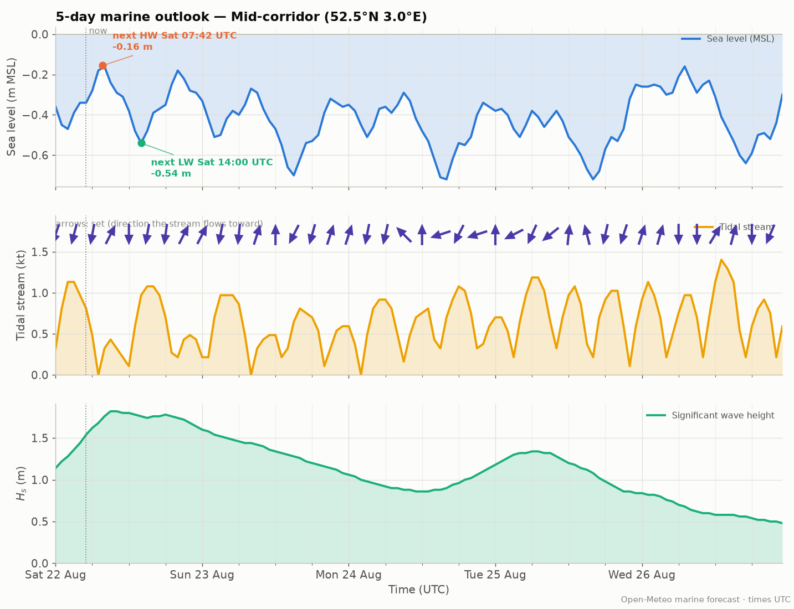
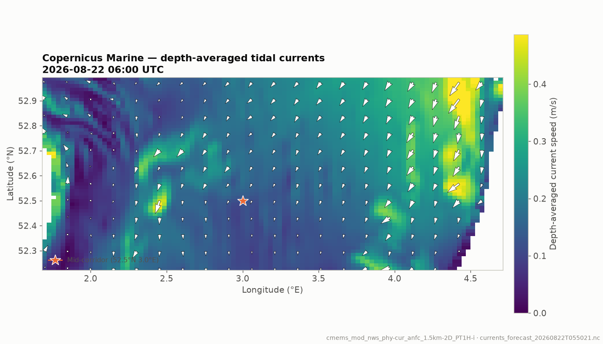

Marine outlook — next 5 days
Sea level with the next high/low water labeled, the tidal stream in knots (arrows show where it sets toward), and significant wave height.

Sea level (relative to mean sea level), the next high and low water, and the tidal
stream at the mid-corridor point. Fetched and rendered by the Claude agent —
refresh it with python agent/run_agent.py.
Sea level with the next high/low water labeled, the tidal stream in knots (arrows show where it sets toward), and significant wave height.

Quick-look maps over the crossing area from the Copernicus Marine forecast,
produced with the get-forecast skill. Hidden when the agent ran
without Copernicus credentials.
